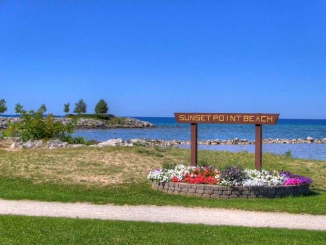

Collingwood Sights & Attractions
Collingwood has more than 50 kilometres of walking, hiking, and cycling trails on a variety of surfaces. Many of these trails are along our beautiful Georgian Bay waterfront, including some of the most stunning beaches and waterfront parks. Don’t miss Sunset Point, Millennium Overlook and Harbourlands Park.

Memorial Park Beach
This lovely beach is located on the eastern side of Meaford on Grant Avenue. Offshore are “the Sisters”, large rocks jutting out from the waters of Georgian Bay. Legend has it two sisters swam too far from shore and drowned. Afterward, these rocks mysteriously appeared where the unlucky girls perished.
In spite of the gruesome tale of the Sisters, this park is a lovely place to spend the day. There are 400 metres of shoreline, a picnic area, a children’s playground, miniature golf and clean washrooms. Parking is free.
Little River Beach Park
Little River Beach Park is a pebbled beach surrounded by trees near the Town of the Blue Mountains. This beach is up for a Blue Flag designation and has a lifesaving station, washrooms, a children’s playground and parking.